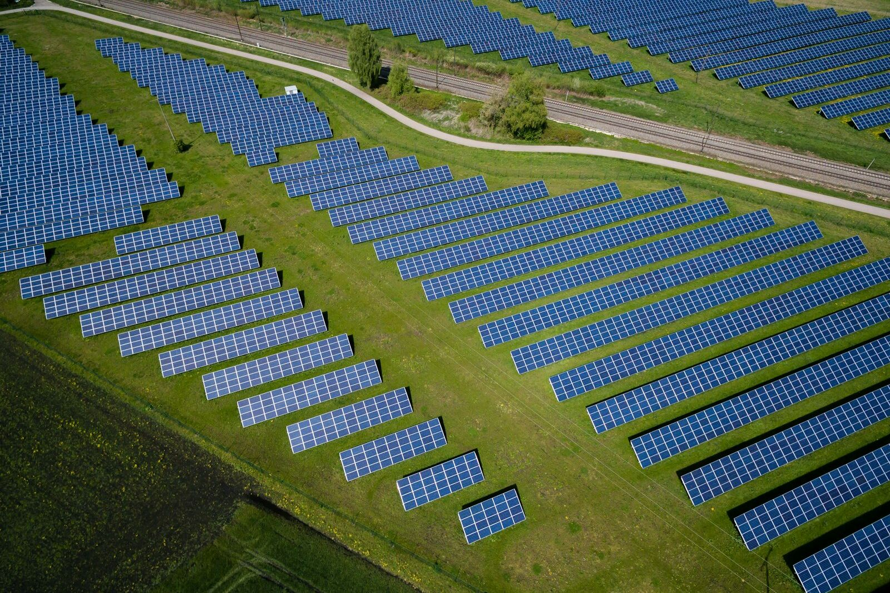

Bushfire season is a mowing deadline
Solar farm asset protection zone mowing in Queensland is becoming a compliance deadline. Cut all year, hold APZs to spec, keep dated height records.

How should a Queensland solar farm keep its asset protection zone mowed for fire season?
Cut continuously all year, hold the APZs and firebreaks to the written specification, and keep dated height and coverage records. Don't rely on a spare afternoon in November, because the growth flush and the fire danger ratings arrive together.
Vegetation management on solar farms is usually discussed as a cost line. In Queensland it is becoming something sharper: a compliance deadline with a fire season attached.
The regulatory direction is clear. Fire authorities and planning codes increasingly expect solar facilities to maintain defined asset protection zones, cleared and cut buffers around arrays and infrastructure, held to specification, not to good intentions. New guidance for renewable sites keeps tightening, and the paperwork expectation tightens with it. It is no longer enough for the grass to be mostly under control. Someone has to be able to show it was at height, on schedule, before the season turned.
Now put that against how most sites actually mow: whoever has a spare afternoon, on whatever machine is running. That model produces exactly the failure the codes are written against, a wet spring, a growth flush, a stretched crew, and fuel load standing tall under the asset right as the fire danger ratings climb.
Two facts, side by side. Fire compliance is moving from suggestion to specification. And on most sites, mowing still is not anybody's actual job.
The fix is not heroics in November. It is a system that cuts continuously all year, holds the APZs and firebreaks to the written spec, and produces the height and coverage records that make an auditor's visit boring. Boring is the goal. In fire compliance, boring is what winning looks like.
Common questions
What is an asset protection zone on a solar farm?
A cleared and cut buffer around arrays and infrastructure, held to a defined height specification before and through fire season. Fire authorities and planning codes increasingly expect it maintained to spec, not to good intentions.
Can an autonomous mower work through fire season?
Yes, with operational limits. The machine has no spark or fire detection, so gravel margins are set as no-go zones, charging is sited carefully, and there's no charging on total fire ban days.
Does the machine do the whole APZ on its own?
No. It holds the mapped runs, roughly 60 to 70 percent of the task. People cut around posts, fences and structures, and wet ground is mapped out until it dries.
What records does an auditor want?
Height, zone and date, with evidence. A machine following mapped lines logs what it cut and when, and height checks with photos each cycle turn that into a file.
Read next
Related: Fire, fuel load and robots: the honest conversation, Solar Farm Vegetation Management with Autonomous Mowers and The best time to mow a solar farm is 2am.
AutoAcre is an autonomous mowing operator based in the Northern Rivers, NSW, focused on solar-farm and commercial vegetation management. ben@autoacre.com.au